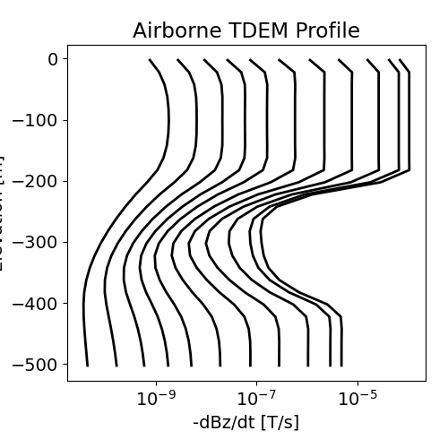
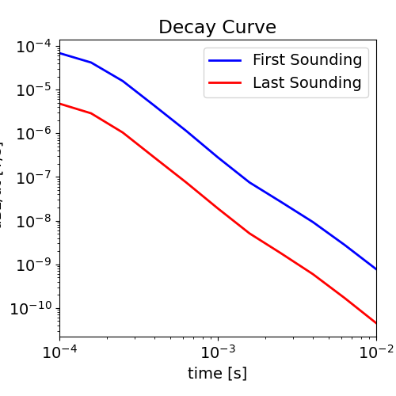

Note
Go to the end to download the full example code.
3D Forward Simulation for Transient Response on a Cylindrical Mesh#
Here we use the module simpeg.electromagnetics.time_domain to simulate the transient response for borehole survey using a cylindrical mesh and a radially symmetric conductivity. For this tutorial, we focus on the following:
How to define the transmitters and receivers
How to define the transmitter waveform for a step-off
How to define the time-stepping
How to define the survey
How to solve TDEM problems on a cylindrical mesh
The units of the conductivity/resistivity model and resulting data
Please note that we have used a coarse mesh larger time-stepping to shorten the time of the simulation. Proper discretization in space and time is required to simulate the fields at each time channel with sufficient accuracy.
Import Modules#
from discretize import CylindricalMesh
from discretize.utils import mkvc
from simpeg import maps
import simpeg.electromagnetics.time_domain as tdem
import numpy as np
import matplotlib as mpl
import matplotlib.pyplot as plt
try:
from pymatsolver import Pardiso as Solver
except ImportError:
from simpeg import SolverLU as Solver
write_file = False
# sphinx_gallery_thumbnail_number = 2
Defining the Waveform#
Under simpeg.electromagnetic.time_domain.sources there are a multitude of waveforms that can be defined (VTEM, Ramp-off etc…). Here we simulate the response due to a step off waveform where the off-time begins at t=0. Other waveforms are discuss in the OcTree simulation example.
waveform = tdem.sources.StepOffWaveform(off_time=0.0)
Create Airborne Survey#
Here we define the survey used in our simulation. For time domain simulations, we must define the geometry of the source and its waveform. For the receivers, we define their geometry, the type of field they measure and the time channels at which they measure the field. For this example, the survey consists of a borehold survey with a coincident loop geometry.
# Observation times for response (time channels)
time_channels = np.logspace(-4, -2, 11)
# Defining transmitter locations
xtx, ytx, ztx = np.meshgrid([0], [0], np.linspace(0, -500, 26) - 2.5)
source_locations = np.c_[mkvc(xtx), mkvc(ytx), mkvc(ztx)]
ntx = np.size(xtx)
# Define receiver locations
xrx, yrx, zrx = np.meshgrid([0], [0], np.linspace(0, -500, 26) - 2.5)
receiver_locations = np.c_[mkvc(xrx), mkvc(yrx), mkvc(zrx)]
source_list = [] # Create empty list to store sources
# Each unique location defines a new transmitter
for ii in range(ntx):
# Define receivers at each location.
dbzdt_receiver = tdem.receivers.PointMagneticFluxTimeDerivative(
receiver_locations[ii, :], time_channels, "z"
)
receivers_list = [
dbzdt_receiver
] # Make a list containing all receivers even if just one
# Must define the transmitter properties and associated receivers
source_list.append(
tdem.sources.CircularLoop(
receivers_list,
location=source_locations[ii],
waveform=waveform,
radius=10.0,
)
)
survey = tdem.Survey(source_list)
Create Cylindrical Mesh#
Here we create the cylindrical mesh that will be used for this tutorial example. We chose to design a coarser mesh to decrease the run time. When designing a mesh to solve practical time domain problems:
Your smallest cell size should be 10%-20% the size of your smallest diffusion distance
The thickness of your padding needs to be 2-3 times biggest than your largest diffusion distance
The diffusion distance is ~1260*np.sqrt(rho*t)
Create Conductivity/Resistivity Model and Mapping#
Here, we create the model that will be used to predict frequency domain data and the mapping from the model to the mesh. The model consists of several layers. For this example, we will have only flat topography.
# Conductivity in S/m (or resistivity in Ohm m)
air_conductivity = 1e-8
background_conductivity = 1e-1
layer_conductivity_1 = 1e0
layer_conductivity_2 = 1e-2
# Find cells that are active in the forward modeling (cells below surface)
ind_active = mesh.cell_centers[:, 2] < 0
# Define mapping from model to active cells
model_map = maps.InjectActiveCells(mesh, ind_active, air_conductivity)
# Define the model
model = background_conductivity * np.ones(ind_active.sum())
ind = (mesh.cell_centers[ind_active, 2] > -200.0) & (
mesh.cell_centers[ind_active, 2] < -0
)
model[ind] = layer_conductivity_1
ind = (mesh.cell_centers[ind_active, 2] > -400.0) & (
mesh.cell_centers[ind_active, 2] < -200
)
model[ind] = layer_conductivity_2
# Plot Conductivity Model
mpl.rcParams.update({"font.size": 14})
fig = plt.figure(figsize=(5, 6))
plotting_map = maps.InjectActiveCells(mesh, ind_active, np.nan)
log_model = np.log10(model)
ax1 = fig.add_axes([0.20, 0.1, 0.54, 0.85])
mesh.plot_image(
plotting_map * log_model,
ax=ax1,
grid=False,
clim=(np.log10(layer_conductivity_2), np.log10(layer_conductivity_1)),
)
ax1.set_title("Conductivity Model")
ax2 = fig.add_axes([0.76, 0.1, 0.05, 0.85])
norm = mpl.colors.Normalize(
vmin=np.log10(layer_conductivity_2), vmax=np.log10(layer_conductivity_1)
)
cbar = mpl.colorbar.ColorbarBase(
ax2, norm=norm, orientation="vertical", format="$10^{%.1f}$"
)
cbar.set_label("Conductivity [S/m]", rotation=270, labelpad=15, size=12)
Define the Time-Stepping#
Stuff about time-stepping and some rule of thumb for step-off waveform
time_steps = [(5e-06, 20), (0.0001, 20), (0.001, 21)]
Define the Simulation#
Here we define the formulation for solving Maxwell’s equations. Since we are measuring the time-derivative of the magnetic flux density and working with a conductivity model, the EB formulation is the most natural. We must also remember to define the mapping for the conductivity model. Use rhoMap instead of sigmaMap if you defined a resistivity model.
simulation = tdem.simulation.Simulation3DMagneticFluxDensity(
mesh, survey=survey, sigmaMap=model_map, solver=Solver
)
# Set the time-stepping for the simulation
simulation.time_steps = time_steps
Predict Data and Plot#
# Data are organized by transmitter, then by
# receiver then by observation time. dBdt data are in T/s.
dpred = simulation.dpred(model)
# Plot the response
dpred = np.reshape(dpred, (ntx, len(time_channels)))
# TDEM Profile
fig = plt.figure(figsize=(5, 5))
ax1 = fig.add_axes([0.15, 0.15, 0.8, 0.75])
for ii in range(0, len(time_channels)):
ax1.semilogx(
-dpred[:, ii], receiver_locations[:, -1], "k", lw=2
) # -ve sign to plot -dBz/dt
ax1.set_xlabel("-dBz/dt [T/s]")
ax1.set_ylabel("Elevation [m]")
ax1.set_title("Airborne TDEM Profile")
# Response for all time channels
fig = plt.figure(figsize=(5, 5))
ax1 = fig.add_axes([0.15, 0.15, 0.8, 0.75])
ax1.loglog(time_channels, -dpred[0, :], "b", lw=2)
ax1.loglog(time_channels, -dpred[-1, :], "r", lw=2)
ax1.set_xlim((np.min(time_channels), np.max(time_channels)))
ax1.set_xlabel("time [s]")
ax1.set_ylabel("-dBz/dt [T/s]")
ax1.set_title("Decay Curve")
ax1.legend(["First Sounding", "Last Sounding"], loc="upper right")
- 
- 
<matplotlib.legend.Legend object at 0x7fd45d994310>
Total running time of the script: (0 minutes 36.683 seconds)
Estimated memory usage: 193 MB